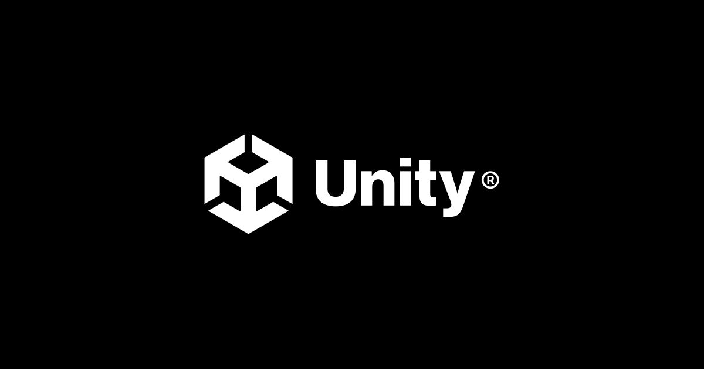

< Unity 로고 >
Unity는 세계를 선도하는 실시간 인터랙티브 3D(RT3D) 콘텐츠 개발 및 운영 플랫폼입니다.
유니티는 산업과 지역을 불문하고 다양한 산업 분야 및 전 세계 크리에이터를 지원합니다.
유니티는 크리에이터가 더 많아질수록 세상은 더 매력적인 곳이 될 거라고 믿습니다.
유니티는 당사의 기술이 세상을 바꿀 수 있다는 믿음으로 이를 비즈니스의 핵심으로 삼고 있습니다.
유니티 제품은 콘텐츠 크리에이터에게 단순히 즐거움을 주는 툴이 아닌 대부분의 산업에서 혁신적인 RT3D 경험을 조성하고 프로세스를 개선하는 툴을 제공합니다.
출처: 유니티 공식 홈페이지 설명